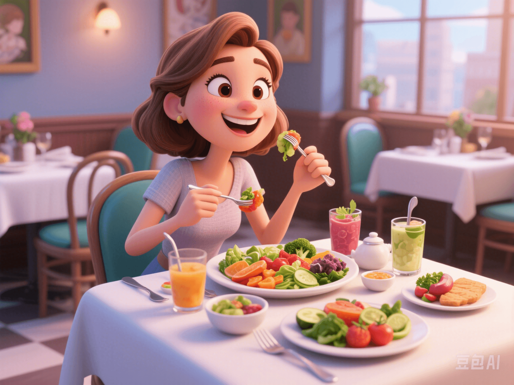

Nutrition Guide for Active Women: Eat Smart, Live Energetically
PeaceLove.Top Insights :2025-04-13
In the fast - paced modern life, more and more women realize that health = strength 🧘♀️+ nutrition 🍽️+ balance ❤️. Whether you are a career - driven woman, a full - time mom taking care of kids, or a cool girl in the gym, a scientific and reasonable nutrition guide is your confidence to be full of energy 💥!
🍓 I. Why Should Women's Nutrition Be “Customized”?
A woman's life goes through multiple stages such as adolescence, reproductive age, pregnancy, and menopause, and the nutritional needs of the body vary at each stage. For example:
- 💃 During menstruation: Iron and vitamin B complex need to be supplemented.
- 🤰 During pregnancy planning/pregnancy: Folic acid, calcium, and DHA are essential.
- 👩🦳 After menopause: Pay attention to bone density, and the combination of calcium and vitamin D is a must.
Therefore, women's nutrition is not as simple as “eating more vegetables”, but rather “eating at the right time, according to needs, and in the right amount” to eat health and beauty 💖.
🥗 II. Top 5 Key Nutrients for Women
1️⃣ Iron
🚺 Women are more prone to anemia due to physiological reasons. Iron deficiency can lead to problems such as fatigue and dizziness. Sources: Animal liver 🥩, spinach 🥬, red dates, and black sesame.
2️⃣ Calcium
💪 It helps prevent osteoporosis, especially important as women's bone mass begins to decline after the age of 30. Sources: Milk, yogurt, tofu, and small dried fish.
3️⃣ Vitamin D
🌞 It promotes calcium absorption, regulates mood, and boosts immunity. Sources: Sun exposure + foods such as salmon, egg yolks, and mushrooms.
4️⃣ Folic Acid
💡 It is essential for women planning to conceive, as it helps with the development of the fetal nervous system. Sources: Green leafy vegetables, nuts, and whole grains.
5️⃣ Omega - 3 Fatty Acids
🧠 It is beneficial for cardiovascular health, emotional stability, and skin glow. Sources: Deep - sea fish (salmon, sardines) and flaxseed oil.
📅 III. Nutrition Focuses at Different Ages
| Age Group | Key Nutrients | Recommended Foods |
|---|---|---|
| 18 - 25 years old 💃 | Iron + protein | Lean beef, beans, eggs, brown rice |
| 26 - 35 years old 👩💼 | Folic acid + calcium | Dark green vegetables, dairy products, nuts |
| 36 - 50 years old 👩👧 | Calcium + vitamin D | Sesame paste, low - fat milk, sun exposure |
| Over 50 years old 👩🦳 | Vitamin B12 + calcium + antioxidants | Seaweed, fish, blueberries, nuts |
🍳 IV. Super - Practical and Nutritious Recipes for Women
🥣 Breakfast: High - Protein Energy Bowl
✔️ Greek yogurt + chia seeds + blueberries + almonds + a spoonful of honey. Nutritional highlights: It provides satiety and promotes gut health.
🥗 Lunch: Low - GI Rainbow Salad
✔️ Chicken breast + avocado + red quinoa + broccoli + olive oil. Nutritional highlights: It balances fat, protein, and dietary fiber to prevent afternoon drowsiness.
🍠 Dinner: Warm Red Date and Yam Congee
✔️ Yam + red dates + brown rice + a little wolfberry. Nutritional highlights: It nourishes blood and the stomach, and you don't have to worry about gaining weight before bedtime.
🔥 V. Popular Keywords to Show What's Trending!
“Female nutritional supplements”, “Three meals a day suitable for office - working girls”, “Detox diets for women”, “What to eat during menstruation to replenish qi and blood”. These are all popular search terms on social media 🔍, indicating that more and more sisters are at the forefront of self - health management 💃!
You don't eat healthily just to lose weight, but to become stronger, happier, and more confident by choosing a scientific diet 💪❤️. Taking good care of your body is not only the most practical way to love yourself but also the confidence for us to keep the energy to love the world! ✨ Health is your superpower. 👑 Girls, eat right, and no one can stop you from shining! 💫